REPARACIÓN DE LA UNIDAD
INSPECCIÓN DEL COMPRESOR DE AIRE ACONDICIONADO V5


Conjunto de placa de embrague y buje
Herramientas necesarias
Extractor/instalador del plato de accionamiento y cubo del embrague J-33013-B
Boquilla para la tuerca del eje J-33022
Útil de sujeción del cubo del embrague J-33027
Útil para sujetar el compresor J-34992
procedimiento de desmontaje (desarmado, desensamble, desensamblaje)
- Desmonte el compresor. Consulte el apartado "Compresor" de esta sección.
- Monte el útil para sujetar el compresor J-34992 en el compresor y sujételo con un tornillo de banco.
- Utilice el útil de sujeción del cubo del embrague J-33027 para evitar que el conjunto del cubo y el plato de accionamiento del embrague giren. Quite la tuerca del eje.

- Monte a rosca el extractor del plato de accionamiento y el cubo del embrague J-33013-B en el cubo. Sujete el cuerpo del extractor con una llave y gire el tornillo central del cuerpo del extractor para extraer el conjunto del cubo y plato de accionamiento del embrague.
- Retire la chaveta del cubo del embrague. Conserve la chaveta para el montaje.

Procedimiento de montaje (armado, ensamblaje)
- Monte la chaveta del cubo del embrague en el chavetero. Deje que la chaveta sobresalga aproximadamente 3,2 mm (1/8 de pulgada) del chavetero. La chaveta del cubo es ligeramente curva para permitir un montaje con interferencia en el chavetero.
- Asegúrese de que la superficie de rozamiento del plato del embrague y el rotor de la polea estén limpios antes de montar el conjunto del cubo y el plato de accionamiento del embrague.
Aviso: No dé golpes en el cubo del embrague o el eje, podría dañar internamente el compresor.
- Alinee la chaveta del cubo del embrague con el chavetero del eje. Coloque el conjunto del cubo y plato de accionamiento del embrague en el eje del compresor.

- Retire el tornillo central del extractor/instalador del plato de accionamiento y el cubo del embrague J-33013-B e invierta la dirección del cuerpo en el tornillo central. El cuerpo del extractor/instalador del plato de accionamiento y el cubo del embrague J-33013-B debería retirarse lo suficiente para permitir que el tornillo central se rosque en el extremo del eje del compresor.
Importante: Si el tornillo central se enrosca completamente en el extremo del eje del compresor, o si el cuerpo del extractor/instalador del plato de accionamiento y el cubo del embrague J-33013-B está sujeto y se gira el tornillo central, la chaveta se acuñará y podría romper el conjunto del cubo y el plato de accionamiento del embrague.
- Monte el extractor/instalador del plato de accionamiento y el cubo del embrague J-33013-B y el cojinete en el plato de accionamiento del embrague. Enrosque el tornillo central en el eje del compresor.
- Sujete el tornillo central con una llave. Apriete la parte hexagonal del cuerpo del extractor/instalador del plato de accionamiento y el cubo J-33013-B para montar a presión el cubo en el eje. Apriete el cuerpo de la herramienta varias vueltas.
- Desmonte el extractor/instalador del plato de accionamiento y el cubo del embrague J-33013-B y compruebe si la chaveta del cubo del embrague está aún en el chavetero antes de montar el conjunto del cubo y el plato de accionamiento del embrague en su posición final. El entrehierro entre las superficies de rozamiento del plato de accionamiento del embrague y el rotor de la polea debe estar entre 0,38 y 0,64 mm. (0,015 y 0,025 pulgadas).

- Desmonte el extractor/instalador del plato de accionamiento y cubo del embrague J-33013-B. Compruebe la posición correcta de la chaveta del cubo del embrague. Debe estar a ras o ligeramente por encima del cubo.
- Coloque la tuerca del eje. Sujete el conjunto del cubo y el plato de accionamiento del embrague con el útil de sujeción del cubo del embrague J-33027. Use la boquilla para la tuerca del eje J-33022 y apriete la tuerca contra el reborde del eje del compresor.
Apretar
Apriete la tuerca del conjunto de cubo y plato del embrague hasta 17 N•m (13 lb-pie).
- Gire el rotor de la polea manualmente para verificar que ésta no roza con el plato del embrague.
- Desmonte el compresor del tornillo de banco y retire del compresor el útil J-42428.
- Monte el compresor. Consulte el apartado "Compresor" de esta sección.
Cojinete y rotor de embrague
Herramientas necesarias
Alicates para anillos elásticos J-6083
Mango del botador J-8092
Travesaño del extractor J-8433-1
Tornillo forzador J-8433-3
Extractor de cojinetes J-9398-A
Instalador de cojinetes J-9481
Instalador del conjunto del rotor de la polea y el cojinete J-33017
Conjunto de herramientas para granetear cojinetes J-33019
Incluye: Guía para granetear cojinetes J-33019-1
Granete para cojinetes J-019-2
Extractor de poleas J-33020
Piloto del extractor J-33023-A
Útil para sujetar el compresor J-34992
Útil para sujetar el compresor J-42428

procedimiento de desmontaje (desarmado, desensamble, desensamblaje)
- Desconecte el cable negativo de la batería.
- Recupere el refrigerante. Consulte el apartado "Procedimientos de descarga, adición de aceite, evacuación y carga para el sistema de aire acondicionado" de esta sección.
- Desmonte el compresor. Consulte el apartado "Compresor" de esta sección.
- Desmonte el conjunto del cubo y plato de accionamiento del embrague. Consulte el apartado "Conjunto del cubo y plato del embrague" de esta sección.
- Desmonte el anillo de retención del conjunto del rotor la polea y el cojinete con los alicates para anillos elásticos J-6083.

- Monte el extractor de poleas J-33020 en el círculo interior de las ranuras del rotor de la polea. Gire el extractor de poleas J-33020 en el sentido de las agujas del reloj, en las ranuras, para enganchar las lengüetas del extractor con los segmentos que se encuentran entre las ranuras del rotor.
- Sujete el extractor de poleas J-33020 y apriete el tornillo del extractor contra el eje del compresor para retirar el conjunto de cojinete y rotor de la polea.

Aviso: El cubo del rotor debe estar bien apoyado para evitar que se dañe el rotor de la polea durante el desmontaje del cojinete.
- Quite el tornillo del extractor de poleas J-33020. Con las lengüetas del extractor aún enganchadas en las ranuras del rotor, invierta el conjunto en una superficie plana sólida o sobre bloques.
Aviso: No es necesario eliminar el graneteado delante del cojinete para retirar el cojinete. Será necesario limar el graneteado antiguo para obtener la holgura adecuada para que se pueda montar el nuevo cojinete en el orificio del rotor, o de lo contrario podría dañarse el cojinete.
- Extraiga el cojinete del cubo del rotor con el extractor de cojinetes J-9398-A y el mango del botador J-8092.

Procedimiento de montaje (armado, ensamblaje)
Aviso: No apoye el rotor dejando el borde de la polea sobre una superficie plana durante el montaje del cojinete o podría dañarse la cara del rotor.
- Invierta el rotor de la polea y colóquelo en un bloque de apoyo para que soporte completamente el cubo del rotor durante el montaje del cojinete.
- Alinee el nuevo cojinete en ángulo recto con el orificio de la polea. Utilice el instalador de cojinetes J-9481 y el mango del botador J-8092. Introduzca el cojinete completamente en el orificio de la polea.

- Coloque la guía para granetear cojinetes J-33019-1 y el granete para cojinetes J-33019-2 en el núcleo del cubo del rotor. Mueva el conjunto del rotor y el cojinete en el bloque para apoyar el cubo debajo del granete. Se puede utilizar una cinta de goma de alto rendimiento para mantener el granete en la guía. El granete debe colocarse adecuadamente en la guía después de cada impacto sobre el mismo.

Precaución: Cuando golpee el pasador con un martillo, tenga cuidado para evitar lesiones personales.
Aviso: Asegúrese de que el punzón metálico no contacte con la pista exterior del cojinete. De lo contrario, la pista exterior podría deformarse.
- Golpee el granete con un martillo hasta que se forme un graneteado metálico similar al original, pero sin tocar el cojinete. El punzón metálico no debe tocar la pista exterior del cojinete para evitar la posibilidad de que ésta pueda sufrir deformaciones. Efectúe el graneteado en tres puntos separados a 120 grados.

- Con el compresor montado en el útil de sujeción J-34992, coloque el conjunto del cojinete y el rotor en la carcasa del compresor.
- Coloque el instalador del conjunto del rotor de la polea y el cojinete J-33017 y el piloto del extractor J-33023-A directamente sobre la pista interior del cojinete.
- Coloque el tornillo central de extracción del travesaño del extractor J-8433-1 sobre el piloto del extractor J-33023-A y monte los dos tornillos pasantes y las arandelas a través de las ranuras del mencionado travesaño. Enrósquelos en el útil de sujeción J-34992. La rosca de los tornillos pasantes debe enroscar en la totalidad del espesor del útil.
- Apriete el tornillo forzador central J-8433-3 en el travesaño del extractor J-8433-1 para forzar el conjunto del cojinete y rotor de la polea en la carcasa del compresor.
- Monte el anillo de retención del conjunto del cojinete y rotor de la polea con los alicates para anillos elásticos J-6083.
- Vuelva a montar el conjunto del cubo y el plato de accionamiento del embrague. Consulte el apartado "Conjunto del cubo y plato del embrague" de esta sección.
- Monte el compresor. Consulte el apartado "Compresor" de esta sección.
- Conecte el cable negativo de la batería.
- Vacíe y vuelva a cargar el sistema de A/A. Consulte el apartado "Procedimientos de descarga, adición de aceite, evacuación y carga para el sistema de aire acondicionado" de esta sección.

Bobina de embrague
Herramientas necesarias
Travesaño del extractor J-8433-1
Tornillo forzador J-8433-3
Piloto del extractor J-33023-A
Adaptador del instalador de la bobina del embrague J-33024
Extractor de la bobina del embrague J-33025
Útil para sujetar el compresor J-34992
procedimiento de desmontaje (desarmado, desensamble, desensamblaje)
- Desconecte el cable negativo de la batería.
- Recupere el refrigerante. Consulte el apartado "Procedimientos de descarga, adición de aceite, evacuación y carga para el sistema de aire acondicionado" de esta sección.
- Desmonte el compresor. Consulte el apartado "Compresor" de esta sección.
- Desmonte el conjunto del cubo y plato del embrague. Consulte el apartado "Conjunto del cubo y plato del embrague" de esta sección.
- Desmonte el rotor del embrague y el cojinete. Consulte el apartado "Rotor del embrague y cojinete" de esta sección.
- Marque la posición del terminal de la bobina del embrague en la carcasa del compresor.
- Monte el piloto del extractor J-33023-A en la carcasa del compresor. Monte también el travesaño del extractor J-8433-1 con el extractor de la bobina del embrague J-33025.
- Apriete el tornillo forzador J-8433-3 contra el piloto del extractor J-33023-A para extraer la bobina del embrague.

Procedimiento de montaje (armado, ensamblaje)
- Coloque el conjunto de la bobina del embrague en el alojamiento del compresor, colocando los terminales en la posición marcada.
- Coloque el adaptador del instalador de la bobina del embrague J-33024 sobre la abertura interna del alojamiento de la bobina y alinee el adaptador del instalador J-33024 con la carcasa del compresor.

- Centre el travesaño del extractor J-8433-1 en el taladro central avellanado del adaptador del instalador de la bobina del embrague J-33024. Coloque los tornillos pasantes del útil para sujetar el compresor J-34992 y las arandelas en las ranuras de los travesaños. Enrósquelos en el útil de sujeción hasta que enrosquen en la totalidad del espesor de dicho dispositivo.
Importante: Cerciórese de que la bobina del embrague y el instalador permanezcan "en línea" durante el montaje.
- Gire el tornillo forzador J-8433-3 o utilice un tornillo de banco adecuado para forzar la bobina del embrague en la carcasa del compresor.

- Cuando la bobina del embrague esté totalmente asentada en la carcasa del compresor, utilice un botador de 3 mm (1/8 de pulgada) de diámetro. Granetee la carcasa en tres puntos separados a 120 grados para garantizar que la bobina del embrague permanezca en su posición. El tamaño del punto de graneteado debe tener sólo la mitad del área de la punta del botador, con una profundidad entre 0,28 y 0,35 mm (0,010 y 0,015 pulgadas), aproximadamente.
- Monte el conjunto del cojinete y rotor del embrague. Consulte el apartado "Rotor del embrague y cojinete" de esta sección.
- Monte el conjunto del cubo y plato del embrague. Consulte el apartado "Conjunto del cubo y plato del embrague" de esta sección.
- Monte el compresor. Consulte el apartado "Compresor" de esta sección.
- Conecte el cable negativo de la batería.
- Vacíe y vuelva a cargar el sistema de A/A. Consulte el apartado "Procedimientos de descarga, adición de aceite, evacuación y carga para el sistema de aire acondicionado" de esta sección.

Sustitución de las juntas de árbol
Herramientas necesarias
Alicates para anillos elásticos J-5403
Extractor de juntas tóricas J-9553-1
Extractor e instalador del asiento del retén J-23128-A
Instalador de juntas tóricas J-33011
Protector del retén del eje J-34614
Importante: No debe sustituirse el retén del eje porque se detecte una pequeña cantidad de aceite en la superficie adyacente. El retén está diseñado para tener alguna fuga de aceite con fines de lubricación. Sólo debe sustituirse el retén del eje cuando se descubra una cantidad grande de aceite derramado y sólo después de haber encontrado la fuga real del refrigerante mediante un procedimiento de detección de fugas homologado. Consulte el apartado "Prueba de fugas en el sistema de refrigerante" de esta sección.
Si se llegase a tener que sustituir un retén de eje del compresor, también debe desmontarse del vehículo el depósito-secador de este sistema. A continuación debe drenarse, medirse y sustituirse el aceite del depósito-secador. Consulte el apartado "Adición de aceite al sistema de refrigerante del aire acondicionado" de esta sección.
procedimiento de desmontaje (desarmado, desensamble, desensamblaje)
- Desconecte el cable negativo de la batería.
- Recupere el refrigerante. Consulte el apartado "Procedimientos de descarga, adición de aceite, evacuación y carga para el sistema de aire acondicionado" de esta sección.
- Afloje y mueva el compresor en los soportes de fijación.
- Desmonte del compresor el conjunto del cubo y plato de accionamiento del embrague. Consulte el apartado "Conjunto del cubo y plato del embrague" de esta sección.
- Utilice los alicates para anillos elásticos J-5403 para desmontar el anillo de retención del retén del eje.

Aviso: Toda suciedad o materia extraña que penetre en el compresor puede causar daños.
- Limpie completamente el interior de la zona de la carcasa del compresor que rodea el eje, la parte expuesta del retén, el propio eje y la ranura de la junta tórica.
- Encaje completamente las lengüetas moleteadas del extractor/instalador del asiento del retén J-23128-A en la parte rebajada del retén girando el mango en el sentido de las agujas del reloj. Desmonte y deseche el retén del compresor mediante un movimiento de giro y tracción. El mango debe apretarse manualmente. No utilice ni llave ni alicates para apretar el mango.

- Desmonte y deseche la junta tórica del cuello del compresor utilizando el extractor de juntas tóricas J-9553-1.
- Limpie bien la ranura de la junta tórica del alojamiento del compresor.
- Revise el eje y el interior del cuello de la carcasa del compresor y verifique si hay suciedad o materias extrañas. Estas piezas deben estar perfectamente limpias antes de montar las piezas nuevas.

Procedimiento de montaje (armado, ensamblaje)
Importante: Los retenes no deben utilizarse nuevamente. Utilice siempre un kit nuevo de retenes de servicio de acuerdo con las especificaciones. Asegúrese de que el retén que se ha de montar no esté rayado ni dañado. No debe tener pelusa ni suciedad que pueda dañar la superficie o evitar el sellado adecuado.
- Sumerja la junta tórica nueva en aceite refrigerante de glicol polialcalino (PAG) y móntela en el instalador de juntas tóricas J-33011.
- Introduzca el instalador de juntas tóricas J-33011 en el cuello del compresor hasta que llegue al "fondo". Baje la parte deslizante móvil del instalador de juntas tóricas J-33011 para dejar la junta tórica colocada en la ranura inferior (la ranura superior del cuello del compresor es para el anillo de retención del retén del eje). Gire el instalador para asentar la junta tórica y, a continuación, retírelo.

- Coloque el retén de labio del eje en el extractor/instalador del asiento del retén J-23128-A. Sumerja el retén en aceite PAG limpio.
- Monte el protector del retén del eje J-34614 en el retén. Colóquelo sobre el eje y empuje el retén, con un movimiento de giro, hasta que encaje en su posición.
- Utilice los alicates para anillos elásticos J-5403 para montar el anillo elástico del retén del eje con su lado plano contra el propio retén.
- Elimine el exceso de aceite alrededor del eje y del interior del cuello de la carcasa del compresor.
- Monte el conjunto del cubo y plato del embrague. Consulte el apartado "Conjunto del cubo y plato del embrague" de esta sección.
- Vuelva a colocar el compresor en su fijación.
- Ajuste la tensión de la correa de accionamiento.
- Conecte el cable negativo de la batería.
- Vacíe y vuelva a cargar el sistema de A/A. Consulte el apartado "Procedimientos de descarga, adición de aceite, evacuación y carga para el sistema de aire acondicionado" de esta sección.
- Realice una prueba de fugas del sistema. Consulte el apartado "Prueba de fugas en el sistema de refrigerante" de esta sección.

Conjunto de válvulas de control
Herramientas necesarias
Alicates para anillos elásticos J-5403
procedimiento de desmontaje (desarmado, desensamble, desensamblaje)
- Recupere el refrigerante. Consulte el apartado "Procedimientos de descarga, adición de aceite, evacuación y carga para el sistema de aire acondicionado" de esta sección.
- Desmonte el anillo de retención de la válvula de control con los alicates para anillos elásticos J-5403.
- Desmonte el conjunto de la válvula de control.

Procedimiento de montaje (armado, ensamblaje)
- Aplique aceite de glicol polialcalino (PAG) a todas las juntas tóricas.
- Empuje con el pulgar la válvula de control para que encaje en su posición.
- Utilice los alicates para anillos elásticos J-5403 para montar el anillo de retención de la válvula. El punto alto de los laterales curvos debe quedar orientado contra el alojamiento de la válvula. Asegúrese de que el anillo de retención quede bien asentado en su ranura.
- Vacíe y vuelva a cargar el sistema de A/A. Consulte el apartado "Procedimientos de descarga, adición de aceite, evacuación y carga para el sistema de aire acondicionado" de esta sección.

Culata trasera, empuñadura, placa de válvula, placa de láminas, y anillo tórico
Herramientas necesarias
Varillas de alineación de los cilindros J-34993
procedimiento de desmontaje (desarmado, desensamble, desensamblaje)
- Recupere el refrigerante. Consulte el apartado "Procedimientos de descarga, adición de aceite, evacuación y carga para el sistema de aire acondicionado" de esta sección.
- Descargue el sistema de A/A. Consulte el apartado "Procedimientos de descarga, adición de aceite, evacuación y carga para el sistema de aire acondicionado" de esta sección.
- Desmonte el compresor. Consulte el apartado "Compresor" de esta sección.
- Vacíe el aceite del compresor en un recipiente adecuado. Mida y registre la cantidad de aceite que se ha drenado del compresor. Deseche el aceite usado.
- Desmonte el conjunto del cubo y plato del embrague. Consulte el apartado "Conjunto del cubo y plato del embrague" de esta sección.
- Desmonte el rotor del embrague y el cojinete. Consulte el apartado "Rotor del embrague y cojinete" de esta sección.
- Desmonte la bobina del embrague. Consulte el apartado "Bobina del embrague" de esta sección.
- Quite los tornillos pasantes del compresor. Retire y deseche las juntas.
- Golpee ligeramente el borde del cabezal trasero con un taco de madera y un martillo de plástico para desenganchar el cabezal del cilindro del compresor. Separe el cabezal trasero, la junta, el plato de válvulas trasero, el plato de válvulas de aspiración y la junta tórica entre el cilindro y el cabezal trasero. Deseche la junta del cabezal y la junta tórica.

Procedimiento de montaje (armado, ensamblaje)
- Coloque el cabezal trasero sobre una superficie plana y limpia. Coloque el cabezal con la válvula de control en la que sería la posición de las 6 en un reloj.
- Monte las varillas de alineación de los cilindros J-34993 en los orificios de fijación en las posiciones de las 11 y las 5 en punto.
- Coloque la junta del cabezal sobre las varillas de alineación de los cilindros J-34993 con el orificio alargado en el pasador superior izquierdo (la posición de las 11 en punto).
- Coloque el plato de válvulas del cabezal trasero sobre las varillas de alineación de los cilindros J-34993 con el orificio alargado en la varilla de alineación superior izquierda. Baje el plato de válvulas del cabezal trasero a su sitio.
- Coloque el plato de válvulas de aspiración sobre las varillas de alineación de los cilindros J-34993. Retire la varilla de alineación en la posición de las 5.
- Lubrique la nueva junta tórica entre el cilindro y el cabezal trasero con aceite refrigerante de glicol polialcalino (PAG).
- Coloque la junta tórica en su ranura del cilindro. Puede lubricarse la superficie de la junta tórica del cabezal para facilitar su montaje.
- Cuando se tenga la junta tórica en su sitio en la parte trasera del conjunto del cilindro, sitúe el tetón de desbloqueo de la varilla de alineación a las 6, justo encima del orificio en el lado del cabezal trasero. Baje con cuidado el cilindro y el conjunto del cabezal delantero por las varillas de alineación de los cilindros hasta el cabezal trasero.
- Presione con las manos el conjunto de la carcasa del compresor y el cilindro hacia abajo sobre el cabezal trasero.
- Ponga la junta nueva en los tornillos pasantes y móntela en el conjunto del compresor. Antes de desmontar las varillas de alineación, cuatro de los tornillos pasantes deben estar roscados en el cabezal trasero.
Apretar
Apriete uno tras otro los tornillos pasantes que unen el cabezal delantero al cabezal trasero del compresor hasta 10 N•m (89 lb-pulg.) siguiendo una secuencia de apriete progresiva.
- Añada aceite refrigerante PAG nuevo tal como se especifica en el Paso 1.
- Coloque en el eje su tuerca y gire el eje del compresor varias veces.
- Realice una prueba de fugas en el compresor. Consulte el apartado "Prueba de fugas (externas)" de esta sección.
- Monte la bobina del embrague. Consulte el apartado "Bobina del embrague" de esta sección.
- Monte el rotor del embrague y el cojinete. Consulte el apartado "Rotor del embrague y cojinete" de esta sección.
- Monte el conjunto del cubo y plato del embrague. Consulte el apartado "Conjunto del cubo y plato del embrague" de esta sección.
- Monte el compresor. Consulte el apartado "Compresor" de esta sección.
- Vacíe y vuelva a cargar el sistema de A/A. Consulte el apartado "Procedimientos de descarga, adición de aceite, evacuación y carga para el sistema de aire acondicionado" de esta sección.
Junta tórica entre el cilindro y el cabezal delantero
Herramientas necesarias
Varillas de alineación de los cilindros J-34993
Bloque de apoyo J-35372
procedimiento de desmontaje (desarmado, desensamble, desensamblaje)
- Recupere el refrigerante. Consulte el apartado "Procedimientos de descarga, adición de aceite, evacuación y carga para el sistema de aire acondicionado" de esta sección.
- Desmonte el compresor. Consulte el apartado "Compresor" de esta sección.
- Vacíe el aceite del compresor en un recipiente adecuado. Mida y registre la cantidad de aceite que se ha drenado del compresor. Deseche todo el aceite usado.
- Desmonte el conjunto del cubo y plato del embrague. Consulte el apartado "Conjunto del cubo y plato del embrague" de esta sección.
- Desmonte el rotor del embrague y el cojinete. Consulte el apartado "Rotor del embrague y cojinete" de esta sección.
- Desmonte la bobina del embrague. Consulte el apartado "Bobina del embrague" de esta sección.
- Desmonte y deseche las piezas del retén de eje. Consulte el apartado "Cambio del retén del eje" de esta sección.
- Quite los tornillos pasantes del compresor. Retire y deseche las juntas.
- Golpee ligeramente la carcasa del compresor en los puntos de montaje con un taco de madera y un martillo de plástico para desenganchar la carcasa del cilindro del compresor.
Importante: Tome nota de la secuencia de montaje de la arandela de empuje y el cojinete para que el montaje sea luego más fácil.
- Monte la arandela de empuje y el cojinete.
- Desmonte y deseche la junta tórica entre la carcasa del compresor y el cilindro.
Procedimiento de montaje (armado, ensamblaje)
- Apoye el cabezal trasero en el bloque de apoyo J-35372. Sitúe la válvula de control en la posición de las 6 .
- Coloque la varilla de alineación de los cilindros J-34993 a través de los taladros de los tornillos situados a las 11 y a las 5.
- Lubrique la nueva junta tórica entre el cilindro y la carcasa del compresor con aceite de glicol polialcalino (PAG) limpio.
- Coloque la junta tórica nueva en su ranura del cilindro.
- Monte la arandela de empuje y el cojinete en el mismo orden en que se desmontaron.
- Alinee el hueco de la varilla de alineación en la carcasa del compresor con la propia varilla. Presione hacia abajo la carcasa del compresor con las dos manos para forzarlo a pasar por la junta tórica en el conjunto del cilindro.
- Ponga la junta nueva en los tornillos pasantes y colóquelos en el conjunto del compresor. Antes de desmontar las varillas de alineación, deben haber roscados cuatro tornillos pasantes en el cabezal trasero.
Apretar
Apriete uno tras otro los tornillos pasantes que unen el cabezal delantero al cabezal trasero del compresor hasta 10 N•m (89 lb-pulg.) siguiendo una secuencia de apriete progresiva.
- Coloque un retén de eje nuevo. Consulte el apartado "Cambio del retén del eje" de esta sección.
- Añada la misma cantidad de aceite PAG que la vaciada en el Paso 3.
- Monte la bobina del embrague. Consulte el apartado "Bobina del embrague" de esta sección.
- Monte el rotor del embrague y el cojinete. Consulte el apartado "Rotor del embrague y cojinete" de esta sección.
- Monte el conjunto del cubo y plato del embrague. Consulte el apartado "Conjunto del cubo y plato del embrague" de esta sección.
- Realice una prueba de fugas en el compresor. Consulte el apartado "Prueba de fugas (externas)" de esta sección.
- Monte el compresor. Consulte el apartado "Compresor" de esta sección.
- Vacíe y vuelva a cargar el sistema de A/A. Consulte el apartado "Procedimientos de descarga, adición de aceite, evacuación y carga para el sistema de aire acondicionado" de esta sección.

Prueba de fugas (externa)
Herramientas necesarias
Juego de comprobación de la presión J-9625-A
- Coloque el conector del juego de comprobación de la presión J-9625-A en los orificios de aspiración/descarga del compresor.
- Conecte el manguito central del juego de manómetros del colector en la estación de carga a un tambor de refrigerante que esté en posición vertical. Abra la válvula del tambor.
- Conecte las tuberías de alta y baja presión de la estación de carga en los racores correspondientes de los conectores del juego de comprobación de la presión J-9625-A (o manguitos equipados con depresores de válvula). La conexión de aspiración (lado de baja presión) del compresor tiene una abertura interna grande. La conexión de descarga (lado de alta presión) presenta una abertura interna más pequeña en el compresor.
- Abra el control de baja presión, el de alta presión y el de refrigerante en la estación de carga para dejar que el vapor del refrigerante pase al compresor.
- Use un detector de fugas para comprobar si hay fugas en el retén de la válvula de descarga de presión, el retén de la carcasa, el retén del cilindro central, las juntas de los tornillos pasantes y el retén del eje del compresor. Una vez realizada la comprobación en busca de fugas, cierre el control de baja presión, el control de alta presión y las tuberías de control de refrigerante de la estación de carga.
- Si hay alguna fuga externa, tome las medidas correctoras que sean necesarias y verifique si se ha reparado la fuga mediante una nueva comprobación.
- Afloje los adaptadores entre las conexiones de los manguitos de los manómetros del colector y los manómetros conectados a los lados de baja y alta presión. Deje que salga la presión de vapor del compresor. Si se emplean manguitos tipo depresor, afloje las conexiones de los manguitos en el colector de manómetros para liberar presión de vapor del compresor.
- Desconecte los dos manguitos de los manómetros. Retire el conector del juego de comprobación de la presión J-9625-A.
REVISIÓN GENERAL DEL COMPRESOR DEL AIRE ACONDICIONADO SP10
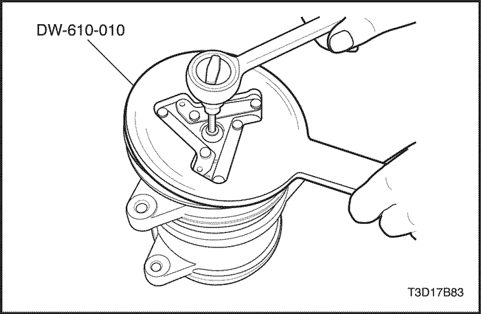
Conjunto de accionamiento y embrague
Herramientas necesarias
Útil de sujeción del cubo del embrague DW-610-010
procedimiento de desmontaje (desarmado, desensamble, desensamblaje)
- Desmonte el compresor. Consulte el apartado "Compresor" de esta sección.
- Use el útil de sujeción del cubo del embrague DW-610-010 para aguantar el conjunto de accionamiento del embrague.
- Quite el tornillo del eje.
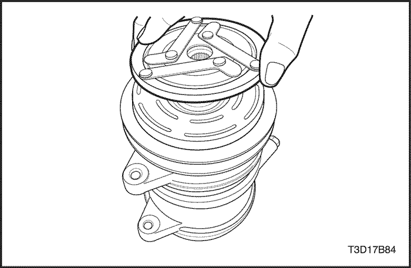
- Tire hacia arriba con la mano del conjunto de accionamiento del embrague.
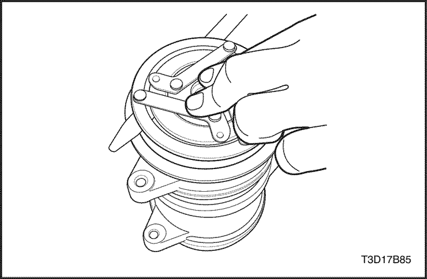
Procedimiento de montaje (armado, ensamblaje)
- Coloque el conjunto de accionamiento del embrague para que el borde estriado del eje coincida con el cubo de accionamiento.
- Introduzca con cuidado el conjunto de accionamiento del embrague.
- Compruebe aproximadamente el entrehierro con la galga presionando el conjunto de accionamiento del embrague antes de fijar el tornillo del eje.
Aviso: Si el entrehierro es correcto, continúe con el siguiente paso, si no lo es, cambie el suplemento para que cumpla el entrehierro (el entrehierro estándar es de 0,3~0,7 mm (0,012~0,028 pulg.)).
- Coloque la arandela antes de poner el tornillo.
Apretar
Apriete el tornillo del eje hasta 12~15 N•m (106~133 lb-pulg.).
- Vuelva a comprobar el entrehierro con la galga.
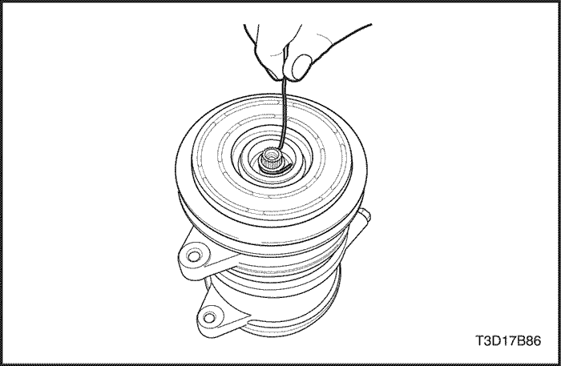
Conjunto de cojinete y polea
Herramientas necesarias
Extractor de juntas tóricas J-9553-1
(para desmontar el suplemento)
procedimiento de desmontaje (desarmado, desensamble, desensamblaje)
- Desmonte el conjunto de accionamiento y embrague. Consulte el apartado "Conjunto de accionamiento y embrague" de esta sección.
- Desmonte los suplementos con el extractor de juntas tóricas J-9553-1.
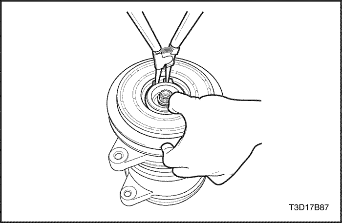
- Use unos alicates para anillos elásticos para quitar la retención del anillo de la polea.
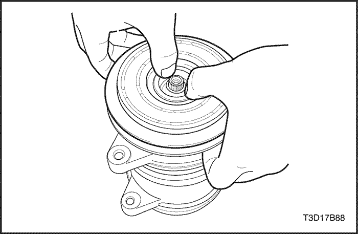
- Tire de la ranura de la polea con las dos manos hasta que se libere el conjunto de cojinete y polea.
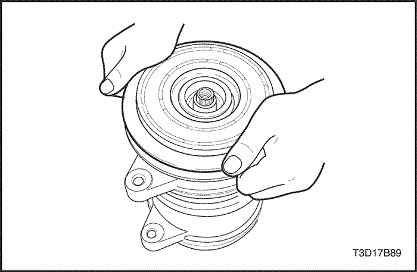
Procedimiento de montaje (armado, ensamblaje)
- Coloque la polea del rotor en el alojamiento del cabezal delantero con precisión y exactitud.
- Introduzca el conjunto de cojinete y polea aumentando gradualmente la presión sobre la superficie de la polea.
Precaución: Nunca emplee un martillo, de lo contrario, podría dañar el cojinete de la polea.
Precaución: Si el cojinete de la polea se acopla correctamente, debería oírse ligera variación de sonido durante el proceso de montaje; preste atención.
- Gire la polea para verificar que está bien montada.
- Monte el anillo de retención con los alicates para anillos elásticos.
Precaución: Tenga cuidado de no dañar el retén del cojinete al montarlo.
Precaución: El borde afilado de la retención debe colocarse en la parte superior.
Precaución: Hay que apretarlo después del montaje para asegurarse de que se ha montado correctamente.
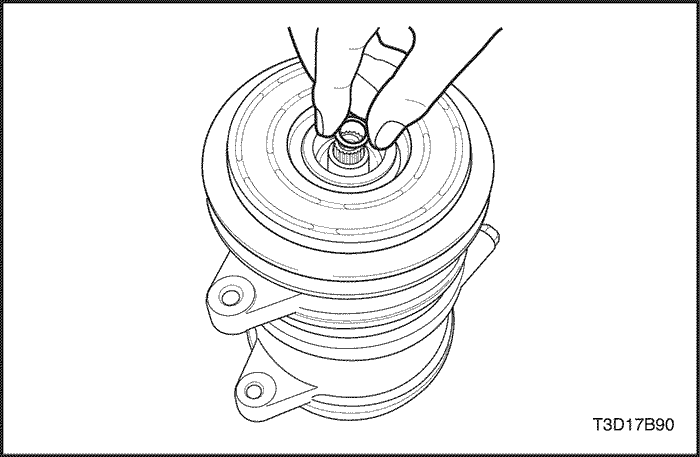
- Coloque el suplemento o suplementos en el reborde del eje. Determine cuántos suplementos y de qué tipo son necesarios para que el entrehierro esté entre 0,3~0,7 mm (0,012~0,028 pulg.).
- Monte el conjunto de accionamiento y embrague. Consulte el apartado "Conjunto de accionamiento y embrague" de esta sección.
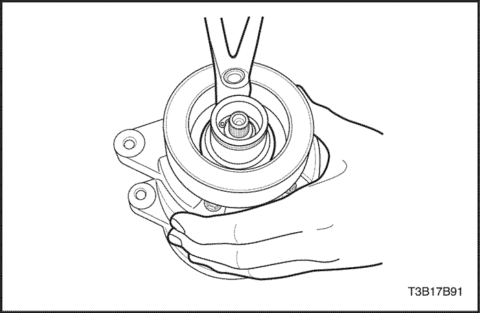
Conjunto de bobina y alojamiento
procedimiento de desmontaje (desarmado, desensamble, desensamblaje)
- Desmonte el conjunto de accionamiento y embrague. Consulte el apartado "Conjunto de accionamiento y embrague" de esta sección.
- Desmonte el conjunto de cojinete y polea. Consulte el apartado "Conjunto de cojinete y polea" de esta sección.
- Use unos alicates para anillos elásticos para quitar la retención de la bobina.
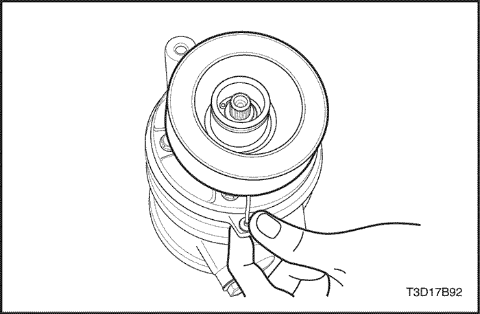
- Desmonte el conjunto de bobina y alojamiento.
Precaución: Tenga cuidado de no dañar la abrazadera del hilo conductor para poder volver a usarlo.
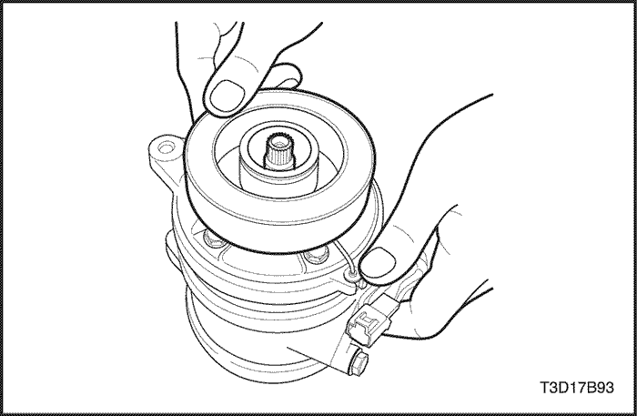
Procedimiento de montaje (armado, ensamblaje)
- Monte con cuidado el conjunto de bobina y alojamiento. La abrazadera del hilo conductor debe colocarse y apretarse en la ranura del cabezal delantero.
Precaución: La parte que sobresale de la brida de la bobina debe coincidir con el orificio del cabezal delantero para que la bobina no se mueva y pueda colocarse bien el hilo conductor.
Precaución: Hay que tensar el hilo conductor tirando hacia el cuerpo del compresor para que no toque la polea.
- Monte el anillo de retención con los alicates para anillos elásticos.
Precaución: Asegúrese de que el borde afilado de la retención de la bobina queda colocado en la parte superior (si la retención no se monta correctamente, podría darse un problema de durabilidad).
Precaución: Después de montar hay que apretar la retención para garantizar que quede bien instalado.
- Monte el conjunto de cojinete y polea. Consulte el apartado "Conjunto de cojinete y polea" de esta sección.
- Monte el conjunto de accionamiento y embrague. Consulte el apartado "Conjunto de accionamiento y embrague" de esta sección.
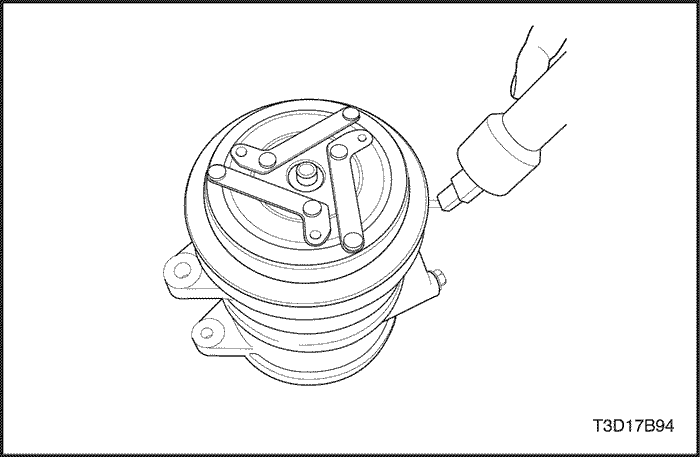
Prueba de funcionamiento del embrague
- Embrague y desembrague durante más de 2 ciclos para verificar que el embrague funcione correctamente.
- Si el embrague no embraga en menos de 1 segundo con 9 voltios, compruebe la resistencia de la bobina (La especificación para la resistencia es de 4,4±0,2 ohmios a 20°C (68°F)).
| © Copyright Chevrolet Europe. Reservados todos los derechos |